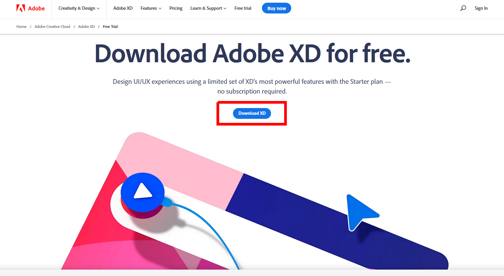

In this lab, we are going to look at ways of documenting a high level view of a web application, including mapping out the pages that you need using SiteMaps, and mapping out the content needed and completed using a spreadsheet application. These activities broadly fall under the UX category of Information Architecture, which has roots in Library science (organizing and prioritizing content), and Cognitive Psychology (making it quick to learn, easy to understand and navigate).
Lab 2: Asset Inventories and Site-Maps
ENSE 271 - People-Centred Design - Laboratory
University of Regina - Engineering and Applied Science - Software Systems Engineering
Lab Instructor: Adam Tilson
The highest level view of a website is often expressed as a sitemap.
Visual Sitemap - A hierarchical diagram which you create prior to website implementation which lists all of the pages on your site, nesting child pages under parent pages. This should be done as soon as you have mapped your user journey, e.g. from User Story Mapping, and after (or in parallel) with collecting and categorizing your content, e.g. in an asset inventory.
Reasons for creating a sitemap:
- Consider User Experience (UX) from the beginning, including:
- How will the content be structured?
- How will the user navigate it?
- Additionally, this can help you…
- Understand the site’s goals and purposes
- Understand how to arrange content
- Similar content should be grouped together, e.g. through Card Sorting
- Helps you eliminate redundancies
- Keep team members on the same page about design
- The sitemap becomes a development roadmap
- Confirm all business goals are met
- You can walk through the sitemap with stakeholders
Try to answer:
- What is the user’s need for information?
- Are they looking for something they know is here?
- Are they browsing content to see what is here?
- Do they want as much detail as possible on a specific topic?
- Are they looking to find something again which they previously found?
- How will they find this information?
- Only ~50% of users arrive from the home page
- Many users start on a sub page, e.g. from a web search
- What clear path can they take to get to their goal?
- More important than the “3-click-rule”
- Only ~50% of users arrive from the home page
From the answers, you can decide between a flat / wide sitemap, or a deep one.
Card Sorting
- A great activity to figure out how content is logically sorted is Card Sorting
- Write page or content titles on cards
- Shuffle them
- Have a client or user then sort these cards into piles
- The piles show how the user logically groups the content
- Informs which pages should be nested together
Example Sitemap:

Note on Hierarchies:
The following diagram shows several ways you can draw out wide hierarchies, but just one way to communicate a deep hierarchy. Students occasionally confuse a vertical display of a wide hierarchy for a deep hierarchy, and while it can be confusing, it’s important to understand the difference to interpret others’ maps.

Note: The Visual Sitemap is not be confused with:
XML Sitemap - Once your website is complete, you should include your sitemap formatted in an XML file. This is for robots, such as search engine webcrawlers, and may help them quickly index your website based on how the pages link together.
- Assets refer to the contents of your web app
text- broadly refers to all text assetscopy- refers to text assets, written by acopywriter. Copy typically lies somewhere between informational and marketing, in that you are typically trying to persuade the reader to do something, acall to action.- All text assets should be shared in a Text Document, e.g. Word, so that writers who are not web experts can easily update this.
images- pictures for your website, which may be supplied from an artist or taken from stock photos. Typically separated betweengraphicsandphotographs- Typically images are modified (cropped) and exported as compressed variants for the web. It can be useful to keep the originals in case further changes need to be done later, e.g. photoshop files.
- Some lossless types are used in the web, e.g.
.pngand.svg, but these are not appropriate for photographs
- other asset types may include
videos,icons,ui elements(buttons),audio,fonts,palettesanddatabases. - It is increasingly popular to use assets hosted by third party services, such as icons and fonts, with trade-offs to this approach
-
During design the asset inventory should be created before or in parallel the sitemap. This way, you are ensuring that your site structure matches your content, and not the other way around. This is called
content firstdesign. -
It is important to track these assets so that, at a glance, one can easily see which assets are found, and which ones are still needed. Highlighting is great for this. It can also be useful to see when assets were last updated, to quickly catch ones that might need an update.
-
There are a number of ways in which we can track the assets we have and need. A spreadsheet is a good idea, which can be shared among the team, either by tracking through github, or using a collaborative office software, like Google Docs.
- This is a living document, which should be updated as you go through your creation process
Example:
Asset Inventory: Pages

Asset Inventory: Assets

You can grab my template from the example files from URCourses.
Installing XD:
You can grab adobe XD from here: Adobe XD
Note, they will try to funnel you towards a paid plan - resist and grab the free edition here!

You will need to make an account and install Creative Cloud in the process.
Optional - Turn off telemetry by going to the website and the settings:

You don’t need to use Adobe XD to create your map, but it’s a nice gentle introduction to the application and the user interface, which we will use in future labs.

Quickly sketch up a sitemap:
- Start by drawing a Rectangle
- Select the rectangle tool, at (1)
- Draw a rectangle in center stage (2) by dragging
- Add some text to the middle of the rectangle
- Select the text tool at (3)
- Create a text object on center stage (2)
- Type to add some text
- Drag the text to where you want it
- Guides appear as you drag things around to help you center and match existing spaces
- Once you like the way this looks, copy and paste rectangles and text together as needed
ctrl+dis a shortcut for duplicating what is selected- Then start dragging to move it around
- Connect pages with lines to represent links
- click on the line tool at (5)
- Drag from one box boundary to the other
- You can fine-tune positioning by selecting the edge of a line after being placed
- You can also creates lines use the more powerful Pen Tool (6), which can allow you to later bend or add curves to your lines
Let’s work together to perform a content audit on an existing website, generating an Asset Inventory and also a Sitemap
Competitor Analysis and Content Audit
For this assignment, you are to find a SMALL (I can’t stress this enough!) website, in the range of 5 to 10 pages. Assume you have been tasked to redesign this website - but you must first analyze the existing content.
You are to create a sitemap and an asset inventory for this site as it currently exists.
Be sure to click around. Look for pages which are not listed in the main navigation. When hunting for assets, don’t forget things like icons, text and images. If you see a carousel as a hero banner, list out the images.
- You may, but do not need to, find the actual filename for an image, but could instead choose something appropriate. It is strongly recommended to name your files in the Linux standard format, as linux is the standard for servers on the web:
- lowercase
- separate words with dashes
- brief but descriptive names
- eg.
coffee-with-cream.png
These analysis methods are more suited to static websites. If you find dynamic content, like forums, blog posts or galleries, these do not need to be exhaustively documented in the asset inventory, instead, simply document all of the content for one entry, eg. one blog post, one forum post, etc., and include a database asset.
Include a text file which includes the name of the site which you are documenting
Good types of websites to analyze: Personal CVs / portfolio pages, small organization pages, single product websites
*** Look through a website first to get a rough idea of the amount of work before committing to document it - I’m not trying to take up too much of your time with this assignment, just give you some practice using the techniques and tools discussed.
Please submit your files on URCourses by the due date, in one .zip file. Include a readme.md file which includes the name of the site which you are documenting, your sitemap as a .png, and your spreadsheet as an .xlsx or .ods.
Example directory (zipped):
a-tilson-sid-ense271-l2.zip
├── readme.md
├── sitemap.png
└── asset-inventory.ods
N. Babich, Sitemaps & Information Architecture (IA), XD Ideas, Adobe, 2019
P. Klancar, An Excellent Beginner’s Guide To Information Architecture, Career Foundry, 2020
E. Key, Prototyping a WordPress Project in Adobe XD, Linda from LinkedIn, 2019